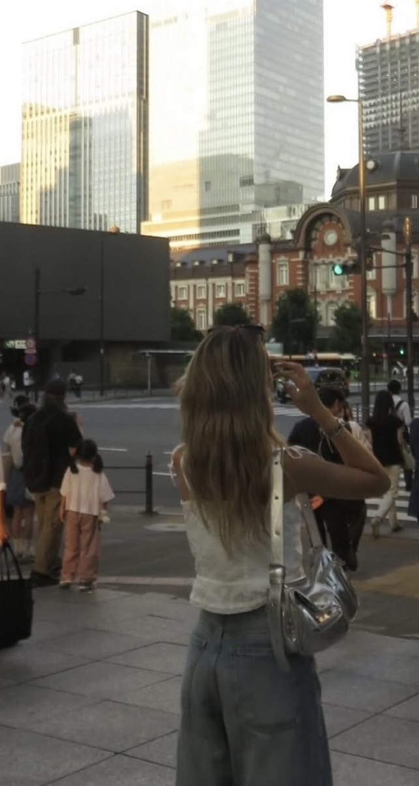
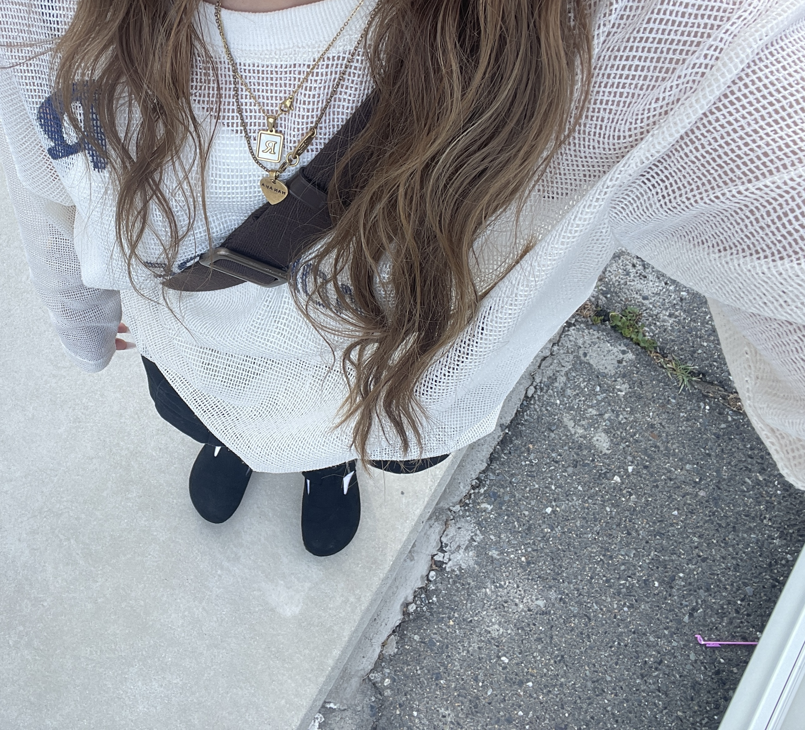

目次
海外風コーデ



カジュアルコーデは普段使いしやすく、動きやすいのが特徴です。 Tシャツやデニムなどを組み合わせることで、おしゃれで自然な雰囲気になります。
スウェットコーデ
スウェットでもおしゃれができます！！近くにお出かけお散歩など動きやすいけど日常からおしゃれをすることで何かいいことがあるかも！！是非参考にしてみてね
カジュアルコーデ


シンプルだけどオシャレになれる！！シンプルこそおしゃれ！このカジュアルさで目を引くファッションをしよう！！